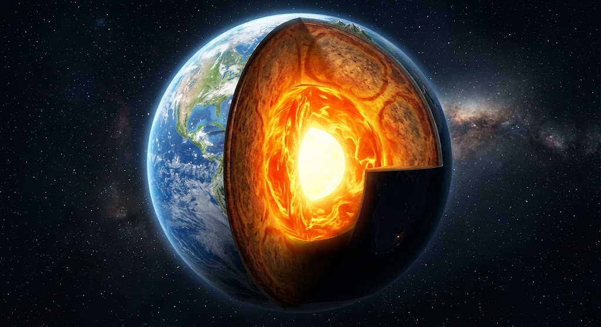

โครงสร้างของโลก
โครงสร้างของโลกเป็นหัวข้อสำคัญทางธรณีวิทยาที่ศึกษาเกี่ยวกับองค์ประกอบภายในโลก โดยโลกมีโครงสร้างแบ่งออกเป็นชั้นต่าง ๆ ตามองค์ประกอบทางเคมีและสมบัติทางกายภาพ ได้แก่ เปลือกโลก เนื้อโลก และแก่นโลก แต่ละชั้นมีลักษณะ อุณหภูมิ ความดัน และองค์ประกอบที่แตกต่างกัน การศึกษาส่วนประกอบเหล่านี้ช่วยให้นักวิทยาศาสตร์เข้าใจกระบวนการต่าง ๆ ที่เกิดขึ้นภายในโลก
เปลือกโลกเป็นชั้นนอกสุดของโลก มีความหนาแตกต่างกันระหว่างเปลือกโลกทวีปและเปลือกโลกมหาสมุทร โดยเปลือกโลกทวีปมีความหนามากกว่าและมีความหนาแน่นน้อยกว่าเปลือกโลกมหาสมุทร ถัดลงมาคือเนื้อโลก ซึ่งเป็นชั้นที่มีปริมาตรมากที่สุดของโลก ประกอบด้วยหินซิลิเกตที่มีแมกนีเซียมและเหล็กเป็นองค์ประกอบสำคัญ ส่วนแก่นโลกอยู่บริเวณใจกลางโลก ประกอบด้วยเหล็กและนิกเกิลเป็นหลัก แบ่งเป็นแก่นโลกชั้นนอกซึ่งมีสถานะเป็นของเหลว และแก่นโลกชั้นในซึ่งมีสถานะเป็นของแข็ง
การศึกษาโครงสร้างของโลกมีความสำคัญต่อการอธิบายปรากฏการณ์ทางธรณีวิทยา เช่น การเกิดแผ่นดินไหว การเคลื่อนที่ของแผ่นธรณีภาค และการเกิดภูเขาไฟ นอกจากนี้ยังช่วยให้มนุษย์เข้าใจการเปลี่ยนแปลงของโลกและสามารถนำความรู้ไปประยุกต์ใช้ในการสำรวจทรัพยากรธรรมชาติได้อย่างเหมาะสม